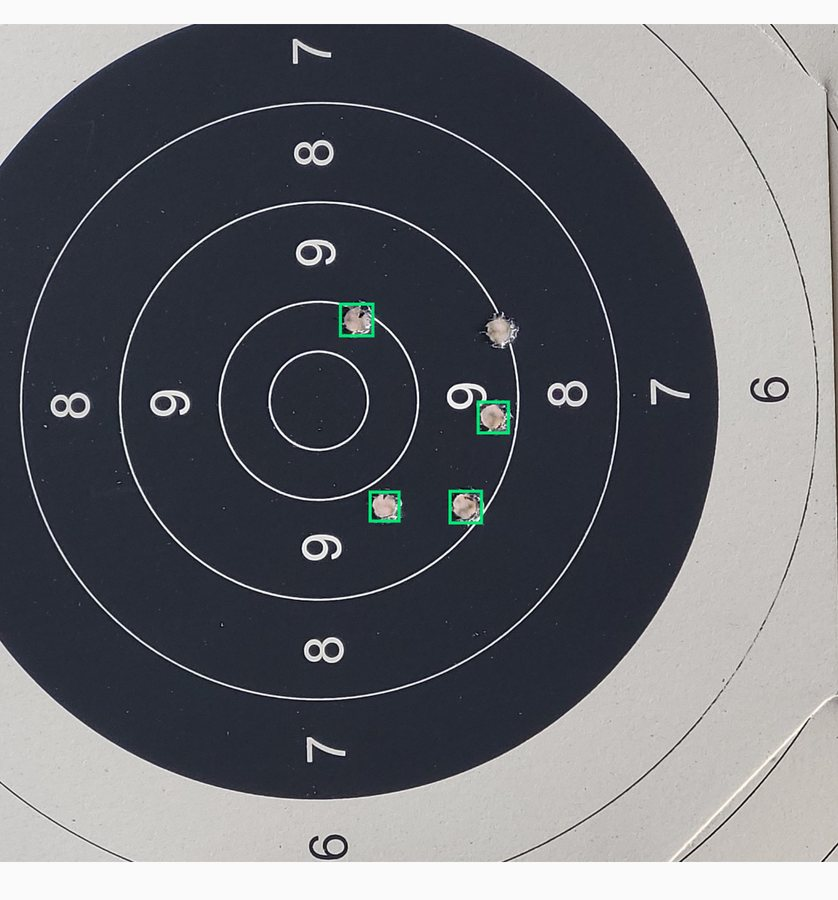
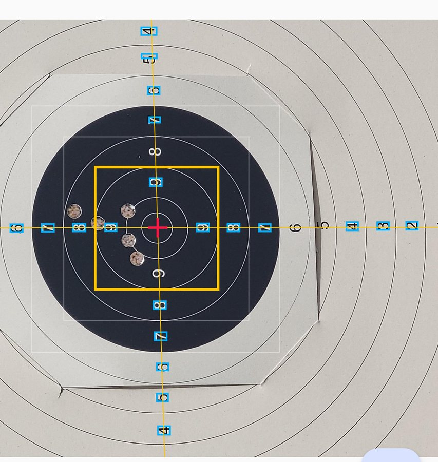
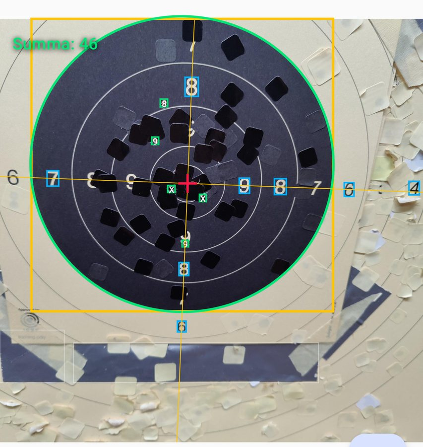
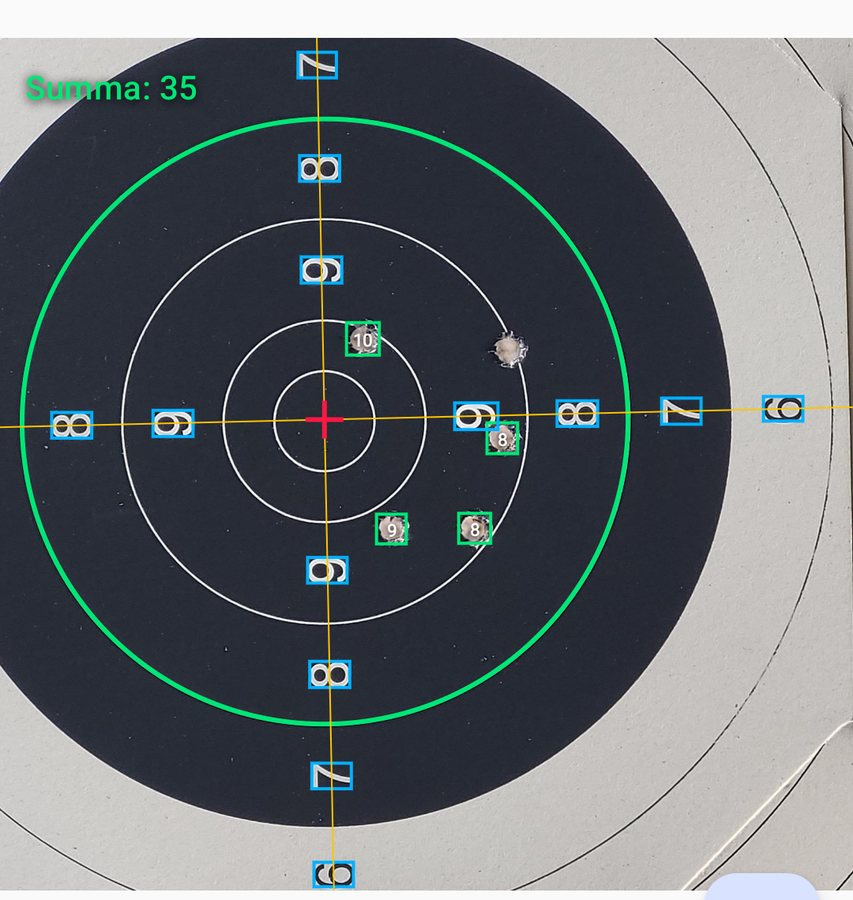
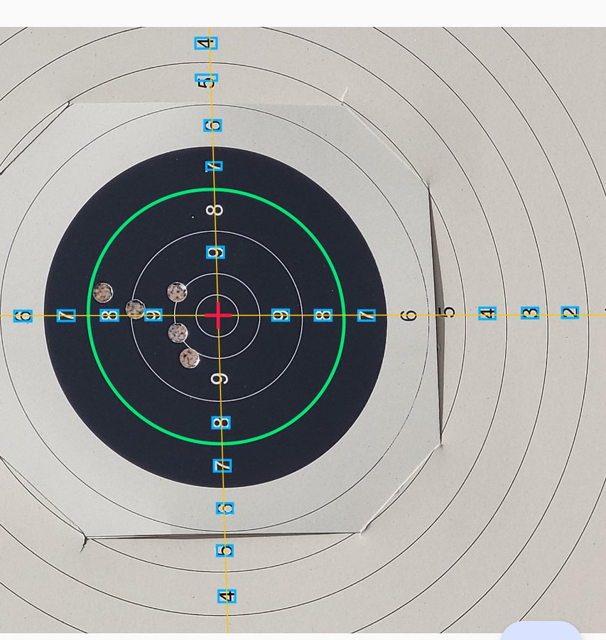

Markera turns a phone photo of a paper target into a scored series. A YOLOv8 model finds the bullet holes, and that part worked early and never really stopped working. The hard problem was geometry. A hole 40 mm from the centre is a 9 or an 8 depending on where the centre actually is and how much the camera tilt has squashed the rings, and a millimetre of error in the centre moves a borderline shot a whole ring.
Every screenshot below is a real run on an Android emulator. Each historical version was checked out into its own git worktree, given a frame source that replays the same three photographs instead of a camera, and extended with debug drawing so a still frame shows what the algorithm was actually looking at. Two of the approaches never ran on a phone at all when they were written, and had to be wired onto the scan path to be photographed. That is noted where it applies.
The three test photographs
Clean is a well-lit target square to the camera, filling the frame. Tilt is the same kind of target shot obliquely and further away, with a crease across the paper. Pasters is a heavily reused target where dozens of black patches cover old holes, including some that touch the ring boundary.
Partly shipped · June 20261. Holes plus a detected centre
The first pipeline thresholded the image, took the largest dark blob, fit an ellipse to it by pixel moments, and treated that ellipse as the black 6/7 ring. From the ellipse it recovered a camera pose and warped the whole photo flat before measuring distances. It is a clean idea: a circle seen at an angle projects to an ellipse, so recovering the ellipse recovers the tilt.


That pair is the whole problem in two pictures. The geometry either worked beautifully or vanished, with nothing in between and no way for the app to tell which it had got. Worse, on a live camera the blob shifted frame to frame, so the centre jittered and scores flickered. The hole detector from this era is still the first step of the pipeline today. The scoring shortcut built on top of it was replaced.
Never built2. Train the model to output scores directly
The tempting shortcut: skip geometry entirely and train the detector to emit a ring value per hole. It scored well on held-out validation images and poorly in real use. Low scores are rare in a dataset of decent shooting, so the model essentially guessed them, and the only fix is a much larger dataset of bad targets, which is slow and unpleasant to collect. There is nothing to photograph because it never reached the app.
Shipped · in use today3. The centre from the printed digits
Paper targets have their ring values printed on them, in a horizontal row and a vertical row that cross at the centre. On-device OCR reads them, the outer 6 to 9 are kept because they sit at well-aligned positions, a line is fitted through each row, and the two lines are intersected.

Two details make it survive real photographs. The row split is median-based, so a single misread digit cannot drag a row off. And a row of only two digits is accepted only when the pair straddles the centre. When the black is so heavily pasted that the digits cannot be read, it returns no centre rather than guessing. This has been in the app since June 2026 and has not needed changing.
Dropped4. The 6/7 ring from the dark blob
With the centre solved, the remaining unknown was the scale, which means finding the black 6/7 boundary. The first attempt reused the idea from approach 1 but with a size prior: threshold, find connected dark components, and pick the blob whose radius is closest to what the viewfinder guide implies.


The root cause is a mismatch of what is being fitted. The blob is a filled region, and the thing that matters is its edge. Anything that adds or removes area, a paster, a shadow, a crease, moves the fitted ellipse even when the edge itself is perfectly visible. The size prior removed the worst false positives but could not fix that. The code was deleted in September 2026.
Dropped5. Fitting the edge with RANSAC
The obvious correction is to fit the edge directly. This version estimated the disc radius from a brightness profile, collected gradient edge pixels in a band around it, and ran RANSAC to fit a conic through them, rejecting outliers. It is a much better-posed problem and the fits are geometrically excellent.


This is the failure mode that killed the approach. A target is a set of concentric circles, so a fitter that only knows about edges has many equally good answers and no way to prefer the right one. On real scans roughly 30 percent of fits landed on the true 6/7 ring. Scoring needs about 95 percent. The radial edge sampling and robust ellipse fit were kept and reused; the standalone detector was not.
Reading approaches 4 and 5
Neither of these ever ran inside the app when it was written. Both lived only in a desktop evaluation module and its tests. To photograph them on the emulator, each was wired onto the live scan path at its own historical commit and given debug drawing. The algorithms are unchanged; only the place they run is new.
Dropped6. Digits locate the ring, the rim shapes it
The insight that broke the deadlock: the digits already say which ring is which. A digit labelled 8 sits at a known fraction of the 6/7 radius, so mapping each recognised digit outward by its own label gives an estimate of where the boundary is, and the median of those estimates ignores misreads. That produces a circle at the right radius. The ellipse shape is then recovered by scanning outward from that circle for the black-to-white edge.


An earlier version of this had derived the entire ellipse, centre, axes and tilt, from the digit points alone, self-calibrating the ring-width fraction with a parameter sweep. It passed all 38 dataset photos and then broke badly at high camera tilt, where the free sweep pushed an inner digit about twice too far out and a five-parameter conic fit on a handful of one-sided points degenerated into slivers. Fixing the ring-width fraction from the published target specification and taking only the radius from the digits was the fix, and it is the version photographed here.
It still was not good enough. On 37 real scans the rim snap landed on the rim about 3 times. The problem is that the scan follows the whole boundary at once, so one bad sector, a crease, a shadow, a paster on the rim, drags the entire fit. The digit radius seed survives in the app today as a sanity check on the probe result.
Shipped · in use today7. Four probe disks that walk to the rim
The version that works gives up on fitting the boundary globally and measures it at exactly four points instead. From the digit centre, four starting points are placed left, right, up and down along the digit rows, each at the 6/7 distance that side's own digits predict, so a tilted target's near side starts further out. A 50 pixel disk sits on each start and counts its dark pixels. A disk centred exactly on the rim comes out very slightly more light than dark, because the black curves away from it. Each disk steps in or out by the amount that ratio implies until it stops moving, and an ellipse is drawn through the four final centres.


It works because it only ever needs the rim to be visible at four places the digits have already pinned down. Interior pasters, other printed rings and the paper edge are never sampled, so they cannot compete. In the first run on a real phone every probe landed on the rim in 40 of 42 scans. There is no fallback: an implausible probe ellipse means no ring and no automatic score, which is the honest answer.
Shipped · in use today8. Scoring from the geometry
With a centre, an ellipse and a set of hole boxes, the rest is arithmetic. Each hole's offset is rotated onto the ellipse axes and the short axis is stretched back out, which undoes the perspective. Pixels convert to millimetres against the published specification, a 100 mm radius to the black edge and a ring every 25 mm outward. Scoring gauges by the hole's edge, so a shot whose edge breaks a line counts as the higher ring, which is how it is done on paper.

What the detour was worth
Approaches 1, 4, 5 and 6 all tried to recover the ring boundary from the image as a whole, and every one of them was defeated by the same thing: a paper target is covered in circles, and an algorithm that only understands edges and blobs has no way to know which circle it has found. The fix was not a better fitter. It was noticing that the target prints the answer on itself, and using the digits to decide both where to look and what to look for.
The three surviving pieces are the hole detector from the very first version, the digit-based centre, and the four probe disks. Everything else was deleted.